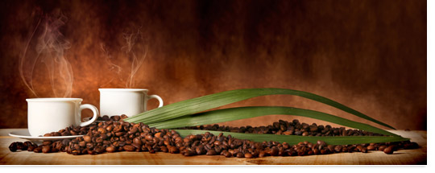
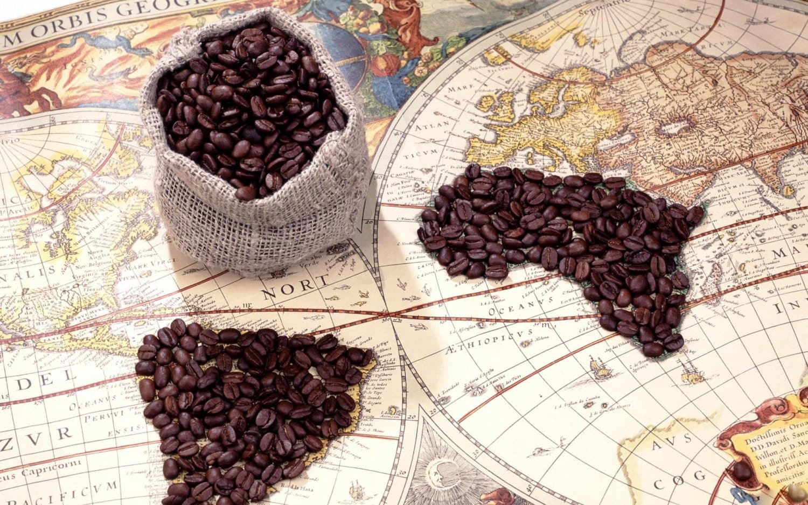

Le Cafééééééééééé
Le café (de l'arabe قهوة : qahwah, boisson stimulante) est une boisson énergisante psychotrope stimulante, obtenue à partir des graines torréfiées de diverses variétés de caféier, de l'arbuste caféier, du genre Coffea. Il fait partie des trois principales boissons contenant de la caféine les plus consommées dans le monde, avec le thé et le maté.
Culture du Café
La culture du café est très développée dans de nombreux pays à climat tropical d'Amérique, d'Afrique et d'Asie, dans des plantations qui sont cultivées pour les marchés d'exportation du commerce international. Il représente souvent une contribution majeure pour l'économie des pays producteurs (économie du café).
Origine du café
Le mot arabe قهوة qahwah ou qawa, parfois prononcé « cahouah » ou « gawah », désigne déjà dans l'Arabie Heureuse la graine de café torréfiée et la boisson chaude préparée suivant divers procédés. Selon certains géographes, le mot serait associé à la province éthiopienne de Kaffa7. Selon d'autres avis, il pourrait être relié au mot kahoueh signifiant « ce qui donne de l'appétit » et aurait ainsi la même origine que le mot arabe pour « vin » ; le vin était connu dans le monde arabe antique et le même nom aurait été donné au café, boisson nouvelle, peut-être en raison d'une ressemblance (couleur ou amertume)8.
CECI EST UN TITRE
Nos Articles
Histoire du Café
Histoire du caféLe Café en Europe
 Le café en EuropePropagation du Café dans le monde
 PropagationNos Equipes
Mr Scooby Doo (Testeur)

Mr Eren Jaeger (Directeur)
Céline Dion (Secrétaire)